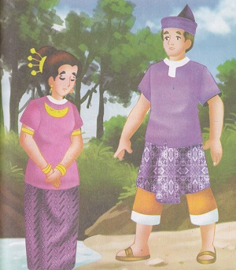

Putri Sindang Bulan
( Cerita Rakyat Bengkulu )
Alkisah, di daerah Bengkulu, hiduplah seorang putri yang bernama Putri Sindang. Putri Sindang adalah putri ke tujuh dari Raja Mawang. Ia sangat cantik dan berbaik hati. Namun dirinya tak kunjung mendapatkan suami. Setiap kali ada yang datang melamarnya tiba-tiba saja ia langsung menderita penyakit kusta, dan penyakit itu hilang jika lamarannya dibatalkan.
Hal ini sudah terjadi sembilan kali, sehingga kakak-kakaknya menganggap hal ini adalah aib dan ia berniat membuang Sang Putri ke hutan. Ki Karang Nio lah yang di utus. Namun, Ki Karang Nio merasa kasihan. “Aku akan menyelamatkanmu adikku “ujar Ki Karang Nio. Ia pun menghanyutkan Putri dengan rakit ke pulau seberang, yaitu pulau Pegat.
Di Pulau Pegat, ia bertemu dengan Raja Indrapura. Sang Putri menceritakan apa yang terjadi pada dirinya. Raja Indarapura meras kasihan, ia pun membawa Putri Sindang Bulan ke istananya di Negeri Setio Barat. Tak berapa lama, kemudian terdengarlah kabar bahwa Raja Indrapura akan menikah dengan Putri Sindang Bulan. Berkat kesaktian Raja Indrapura, penyakit kusta sang putri tidak pernah kambuh lagi.
Kemudian Putri mengundang kakak-kakaknya ke pesta pernikahannya. Mengetahui hal tersebut kakak-kakaknya sangat marah, mereka meras Ki Karang Nio membohongi mereka.
Karena takut kepada Raja Indrapura, mereka pun datang menghadiri pernikahan adiknya. Putri Sindang Bulan sama sekali tidak merasa dendam, bahkan ia memberika perhiasan kepada kakak-kakaknya saat hendak pulang.
Di perjalanan pulang, kapal mereka karam, seluruh perhiasan tenggelam, yang tersisa hanyalah perhiasan milik Ki Karang Nio. Mereka pun berniat membunuh Ki Karang Nio. Ki Karang Nio yang mengetahui itu membagi perhiasannya sama rata. Kakak-kakaknya pun merasa malu atas perbuatan mereka. Mereka pun berniat untuk tinggal di pulau tersebut, sementara Ki Karang Nio kembali dan memimpin kerajaan. Sejak saat itu tempat dimana mereka terpisah dinamakan Teluk Sarak yang berarti berpisah. Ki karang Nio pun hidup di kerajaan dan menikah dengan putri raja.